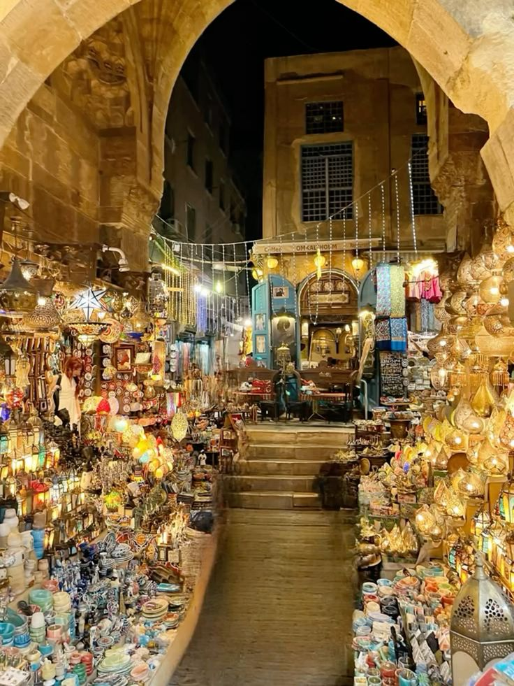

Khan El Khalili is one of the oldest and most famous markets in Cairo. Founded in the 14th century, it is known for its traditional shops, handmade crafts, jewelry, spices, perfumes, and souvenirs. The market offers visitors a unique experience of Egyptian culture and is a popular destination for both tourists and locals.